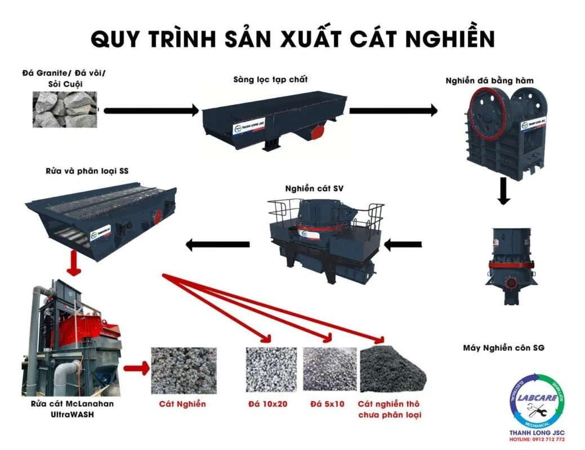
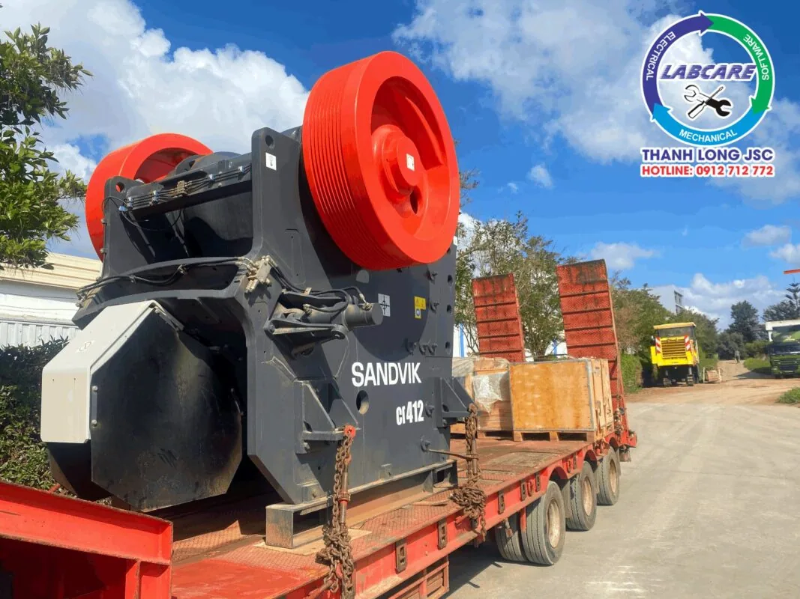
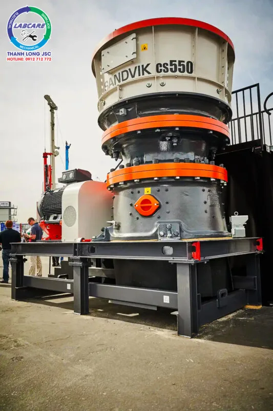
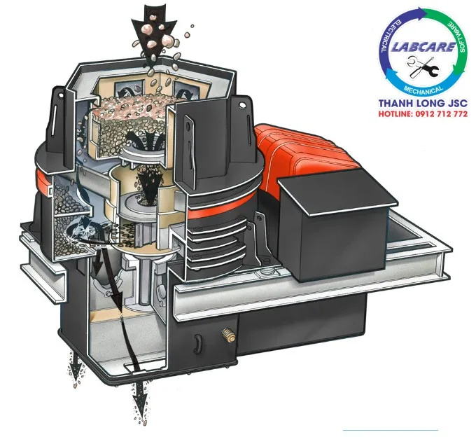
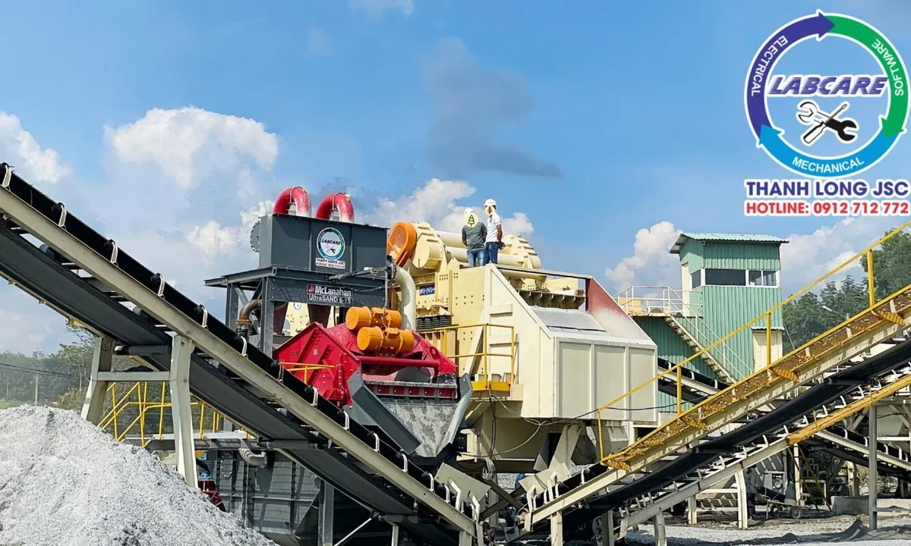
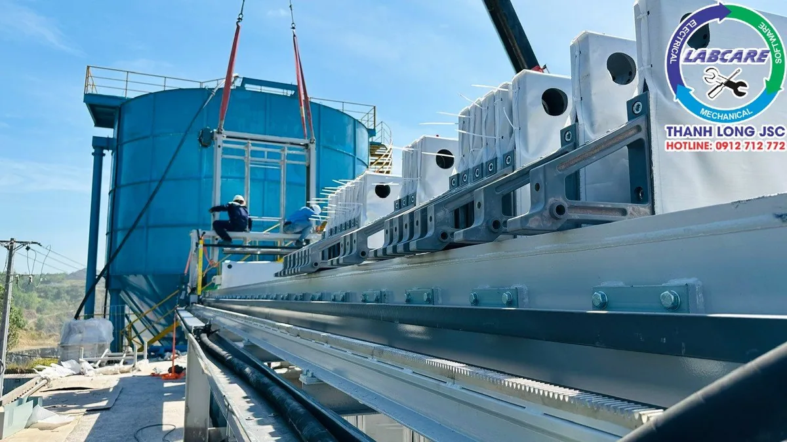

Cát nhân tạo trong xây dựng là giải pháp thay thế cát tự nhiên trong tương lai. Cát là nguyên liệu không thể thiếu trong ngành xây dựng. Tuy nhiên, khai thác cát tự nhiên làm cho việc sạt lở và dây ra các vấn đề về môi trường, nguồn cung ứng cát tự nhiên ngày càng khan hiếm. Việc sản xuất cát nhân tạo trở thành giải pháp thay thế cát tự nhiên nhằm đáp ứng các vấn đề thiếu hụt cát. Bài viết này sẽ trình bày về nguyên liệu sử dụng để sản xuất cát nhân tạo, quy trình và công nghệ sản xuất cát nhân tạo và tiêu chuẩn quốc gia TCVN 9205:2012

Tại sao nên sản xuất cát nhân tạo trong xây dựng thay thế cát tự nhiên?
Sản xuất cát nhân tạo trong xây dựng có vai trò cực kì quan trọng trong việc duy trì ổn định nguồn cung ứng cho ngành. Vậy sử dụng cát nhân tạo có những lợi ích nào?
Bảo vệ môi trường:
Khai thác cát tự nhiên từ gây ra sạt lở đất, ảnh hưởng đến hệ thống sông ngòi, và gây ra biến đổi cảnh quan tự nhiên. Sản xuất cát nhân tạo giúp giảm áp lực khai thác cát tự nhiên, bảo vệ môi trường sống.
Đảm bảo nguồn cung ứng ổn định:
Cát nhân tạo trong xây dựng được tạo ra nhờ các dây chuyền nghiền. Qua đó đảm bảo cho nguồn cung ứng ổn định. Giá cát nhân tạo được ổn định hơn. Sự khan hiếm cát tự nhiên có thể gây ra sự dao động trong giá cả và sự thiếu hụt nguồn cung ứng cho ngành xây dựng. Cát nhân tạo giúp đảm bảo nguồn cung ứng ổn định và ổn định giá cả.
Chất lượng kiểm soát:
Quá trình sản xuất cát nhân tạo cho phép kiểm soát chất lượng cát theo tiêu chuẩn quốc gia. Đảm bảo rằng nó đáp ứng các yêu cầu kỹ thuật của các dự án xây dựng.
Nguyên liệu sử dụng để sản xuất cát nhân tạo trong xây dựng

Cát nhân tạo được sản xuất từ nguyên liệu sẵn có trong tự nhiên. Các nguyên liệu bao gồm đá vôi, đá bazan, sỏi sông, sỏi cuội,…
Cát nhân tạo được sản xuất từ dây chuyền sản xuất cát nhân tạo. Và phải đảm bảo được các yêu cầu về cơ lý, hoá phù hợp với tiêu chuẩn. Cát nhân tạo được tạo ra phải đảm bảo tiêu chuẩn TCVN 9205:2012. Tiêu chuẩn TCVN 9205:2012 là tiêu chuẩn cát nghiền cho bê tông và vữa. Một dây chuyền nghiền cát nhân tạo theo tiêu chuẩn là các tiêu chuẩn về điều chỉnh module hạt. Cát nhân tạo được tạo ra theo từng module khác nhau như module 2.65; cát nhân tạo module 2.75. Cát nhân tạo module 2.85; cát nhân tạo module 3.0; cát nhân tạo module 3.1 và cát nhân tạo module 3.2…
Quy trình và dây chuyền sản xuất cát nhân tạo trong xây dựng

Dây chuyền sản xuất cát nhân tạo thường sử dụng các thiết bị nghiền, thiết bị rửa và hệ thống xử lý nước thải. Quá trình này cần kiểm soát kích thước hạt, hình dạng, và chất lượng để đảm bảo sản phẩm đáp ứng các tiêu chuẩn cụ thể.
GIAI ĐOẠN 1: Nghiền thô và sàng lọc tạp chất
Nguyên liệu đá sau khi nổ mìn, được đưa qua cấp liệu rung để lọc tạp chất. Vật liệu có kích thước trên 90 mm sẽ đi vào máy nghiền hàm, qua băng tải và tập trung về phễu chứa trung gian.

GIAI ĐOẠN 2: Nghiền thứ cấp
Đá sau khi qua máy nghiền hàm sẽ theo băng tải qua máy nghiền côn. Nguyên liệu sau khi qua máy nghiền côn sẽ được băng tải đổ lên sàng rung phân loại thành 2 thành phần:

Đá trên 40mm sẽ theo băng tải hồi về côn
Đá từ 0-40mm sẽ được băng tải đưa qua phễu chờ để chuẩn bị cho giai đoạn nghiền tinh
GIAI ĐOẠN 3: Nghiền tinh

Đá từ phễu chờ được cấp qua máy nghiền VSI, vừa để nghiền cát vừa để định hình viên đá. Sau đó sản phẩm được đưa lên sàng rung để rửa và phân loại. Sản phẩm đá 5-19 mm, 5-22 mm, hỗn hợp cát nghiền 0-5 mm và nước sẽ được qua giai đoạn tiếp theo.
GIAI ĐOẠN 4: Rửa cát – Loại tạp chất

Hỗn hợp cát nghiền 0-5 mm và nước qua máy rửa cát Mc Lanahan để rửa, loại bỏ tạp chất, bụi. Cát module sẽ qua sàng rung tách nước để ra thành phẩm. Lưu kho bãi – Xuất hàng.
GIAI ĐOẠN 5: Xử lý bùn – Thu hồi nước
Hỗn hợp nước và chất thải sau khi nghiền sẽ được đưa vào bể chứa hay còn gọi là thickener. Hỗn hợp được xử lý và đổ ra các bánh bùn đã được sấy khô và tận dụng làm san lấp. Tránh gây ô nhiễm môi trường và tận dụng được nguồn nguyên liệu sẵn có.

Ưu điểm và ứng dụng của cát nhân tạo trong xây dựng
Dây chuyền sản xuất cát nhân tạo hiện đại, tự động hoàn toàn giúp sản xuất ra cát nhân tạo có hình dạng tròn đều, ít góc cạnh, giúp giảm ma sát, tăng tính linh hoạt, ổn định chất lượng, tính công tác cho bê tông.
Với dây chuyền sản xuất cát nhân tạo trên có thể dễ dàng phối trộn. Tương thích với các loại vật liệu khác giúp tối ưu cấp phối, tạo ra loại bê tông đặc chắc, không có lỗ rỗng. Bê tông sử dụng cát nghiền có cường độ nén và uốn rất cao, chịu mài mòn tốt. Khả năng chống thấm, chống xâm thực cực tốt. Bền vững và ổn định với môi trường, giúp đẩy nhanh tiến độ thi công và đảm bảo tuổi thọ lâu dài của công trình. Cho phép tiết kiệm đáng kể lượng xi măng và các chất kết dính. Tiết kiệm chi phí.
Mua dây chuyền sản xuất cát nhân tạo ở đâu?
Máy nghiền đá Thanh Long đơn vị số 1 trong lĩnh vực cung cấp các thiết bị nghiền rửa cát nhân tạo. Đưa niềm tin tới khách hàng giúp khách hàng đưa ra được các sản phẩm đạt chất lượng. Lấy niềm tin khách hàng làm nền tảng.
Liên hệ với chúng tôi để được tư vấn và đưa ra các giải pháp về xử lý môi trường trong qua trình nghiền.
Hotline: 0912 712 772